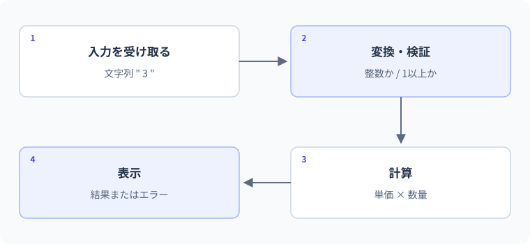

27 責務の分離と入力検証 — 詳細解説
入力から結果までの責務。
図解：入力から結果までの責務

一つのメソッドへ全てを詰め込むと何が困るか
入力を読む、数値へ変換する、値の範囲を確認する、在庫を変える、画面へ表示する、という処理を一つへ集めると、画面を変えたいだけでも業務ルールへ触れやすくなります。責務とは、その部品が担当する仕事と判断の範囲です。責務を分ける目的はファイル数を増やすことではなく、変更する理由を分かりやすくすることです。
入力検証にも種類があります。「整数に変換できるか」は形式の検証、「数量は正か」は値の検証、「在庫以内か」は現在の状態を含む業務上の検証です。表面だけで全てを検証しても、別の入口から呼ばれたときに業務状態が壊れるなら不十分です。
- 1入口
文字列・HTTP・ファイルなどから受け取る
- 2形式を整える
null、空白、数値変換を確認
- 3業務ルール
正の数量、在庫以内などを判断
- 4変更を確定
成功するときだけ状態を変える
- 5結果を返す
成功・拒否理由を入口向けに表現
最小例：計算と表示を分ける
int total = CalculateTotal(120, 3);
Console.WriteLine($"合計:{total}");
static int CalculateTotal(int unitPrice, int quantity)
{
if (unitPrice < 0) throw new ArgumentOutOfRangeException(nameof(unitPrice));
if (quantity <= 0) throw new ArgumentOutOfRangeException(nameof(quantity));
return checked(unitPrice * quantity);
}期待出力は合計:360です。CalculateTotalはConsoleへ表示せず、値を返します。画面、ファイル、Web APIのどこから呼んでも同じ計算を利用できます。nameofは変数やメンバーの名前を文字列として得る構文です。引数名を直接文字列で重複記述するより、名前変更に追随しやすくなります。
このメソッドはプログラム内部から不適切な引数を渡された場合を例外で示します。利用者が何度も入力を間違える通常の流れでは、入口でTryParseしたり、成功・失敗を結果として返したりする設計も適しています。例外と結果型を目的で使い分けます。
実用例：入力・業務・表示の三つの境界
var stock = new StockService(5);
HandleInput("2", stock);
HandleInput("10", stock);
HandleInput("abc", stock);
Console.WriteLine($"最終在庫:{stock.Count}");
static void HandleInput(string text, StockService stock)
{
if (!int.TryParse(text, out int quantity))
{
Console.WriteLine("整数で入力してください");
return;
}
TakeResult result = stock.Take(quantity);
Console.WriteLine(result.Message);
}
public record TakeResult(bool Accepted, string Message);
public sealed class StockService
{
public int Count { get; private set; }
public StockService(int count)
{
if (count < 0) throw new ArgumentOutOfRangeException(nameof(count));
Count = count;
}
public TakeResult Take(int quantity)
{
if (quantity <= 0) return new(false, "数量は1以上です");
if (quantity > Count) return new(false, "在庫不足です");
Count -= quantity;
return new(true, $"{quantity}個を受け付けました");
}
}期待出力は2個を受け付けました、在庫不足です、整数で入力してください、最終在庫:3です。new(false, ...)は、戻り値のTakeResult型が分かる位置なので型名を省略したnewです。同じ部分をnew TakeResult(false, ...)と書いても構いません。
| 入力 | 形式の検証 | 業務の検証 | 在庫の前→後 |
|---|---|---|---|
| "2" | 整数2にできる | 正数、5以内 | 5→3 |
| "10" | 整数10にできる | 3を超える | 3→3 |
| "abc" | 整数にできない | 業務を呼ばない | 3→3 |
この例のMessageは学習用に表示文までまとめています。複数言語やHTTPへ展開する場合は、結果に失敗理由のenumなどを持たせ、表示文やHTTPステータスへの変換を入口で行うと、業務層が表現方法へ依存しにくくなります。
間違い：先に状態を変更してから検証する
var stock = new Stock(3);
Console.WriteLine(stock.Take(5));
Console.WriteLine(stock.Count);
public sealed class Stock
{
public int Count { get; private set; }
public Stock(int count) => Count = count;
public bool Take(int quantity)
{
Count -= quantity;
if (Count < 0) return false;
return true;
}
}観察結果はFalse、-2です。失敗と返しているのに、状態は既に壊れています。確認する箇所はreturn falseだけでなく、その前に実行された代入です。修正では変更できる条件を先に確認し、成功する場合だけ更新します。
var stock = new Stock(3);
Console.WriteLine(stock.Take(5));
Console.WriteLine(stock.Count);
public sealed class Stock
{
public int Count { get; private set; }
public Stock(int count)
{
if (count < 0) throw new ArgumentOutOfRangeException(nameof(count));
Count = count;
}
public bool Take(int quantity)
{
if (quantity <= 0 || quantity > Count) return false;
Count -= quantity;
return true;
}
}修正後の期待出力はFalse、3です。成功時だけ変えるというルールを、実際の命令順で保証しています。
入口の検証だけで守れない理由
コンソールの入力で正数を確認していても、後からWeb API、バッチ処理、テストコードなどがStock.Takeを直接呼ぶことがあります。バッチ処理とは、まとめられたデータを決められた手順で処理する実行方式です。どの入口から呼んでも在庫が負にならないことはStock自身が守るべき制約です。
一方、表示するエラーメッセージやHTTPの詳細をStockへ全て持たせると、業務の仕組みが特定の画面へ結びつきます。形式は入口、状態の正しさは業務、保存方法は保存担当というように、誰が最終的に保証するかを整理します。
保存を差し替えるときinterfaceが役立つ
リポジトリという言葉は、ここではデータを保存・取得する操作をまとめた部品を意味します。ソースコードを管理するRepositoryとは文脈が異なります。メモリのListへ保存する実装と、ファイルへ保存する実装を同じ約束で差し替えたいとき、interfaceが役立ちます。
ただし、最初から全てに抽象化を追加すると、処理を追うために多くのファイルを移動することになります。差し替え、外部依存の分離、テストの再現性など具体的な理由がある境界から導入します。実装が一つでも外部I/Oを隔離する価値はありますが、「将来何かあるかもしれない」だけで層を増やしません。
同時実行では検証と変更の間も守る
上のStockは単一の処理の流れを前提にしています。複数のHTTPリクエストが同時に在庫を読むと、両方が「まだ3ある」と判断して更新する可能性があります。検証してから変更する順序は必要ですが、それだけで同時実行に安全になるわけではありません。
共有するメモリならロック、データベースならトランザクションや更新条件など、保存方式に合った仕組みが必要です。ロックは一定の区間へ同時に入る流れを制限するもの、トランザクションは複数のデータ操作を一まとまりとして扱う仕組みです。第29レッスン以降では共有状態を扱う範囲を明示します。
責務を点検する質問
| 質問 | 改善の手がかり |
|---|---|
| 表示文を変えるために計算も編集するか | 計算結果と表示を分ける |
| 在庫不足時に状態が変わっていないか | 検証と確定の順を確認 |
| 同じルールが複数の入口に散らばっているか | 保証する部品を一つにする |
| テストに毎回ファイルや通信が必要か | 純粋な判断と外部I/Oを分ける |
| 抽象化が多く処理の入口が不明か | 具体的な利用経路を整理 |
3段階の練習
基礎：CalculateTotalへ負の価格を渡した場合と正常値を渡した場合の仕様を説明します。正常時360、負の価格はArgumentOutOfRangeExceptionです。表示失敗と計算ルール違反を混同しません。
標準：在庫3に対し、要求0、-1、3、4を独立した初期状態で試すテストを考えます。0と-1と4は拒否・在庫3、3は成功・在庫0です。一つのStockへ順に試す場合は途中の状態が変わるので、初期状態を明示してください。
応用：TakeResultのMessageをReasonというenumへ置き換え、コンソール表示を入口へ移す設計にします。None、InvalidQuantity、InsufficientStockなどを定義し、AcceptedとReasonが矛盾しない生成方法を検討します。レコードを作るだけで全ての不整合が防げるとは限らないため、作成場所も管理します。
境界・比較例：空白除去と必須検証
整形前に未入力を判定すると、null・空文字・空白を同じエラー経路で扱えます。長さ制限などの業務ルールは別に追加します。
Console.WriteLine(NormalizeTitle(" レビュー "));
Console.WriteLine(NormalizeTitle(" ") ?? "入力エラー");
static string? NormalizeTitle(string? input)
{
if (string.IsNullOrWhiteSpace(input)) return null;
return input.Trim();
}想定出力
レビュー
入力エラー公式資料
確認日：2026年9月14日。本文の理解を補うための資料です。学習対象は.NET 10 / C# 14です。パッチ番号は固定しません。